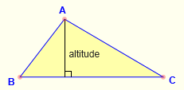
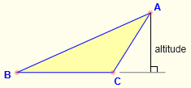
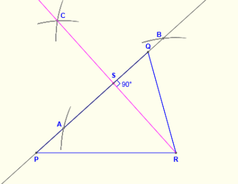

This page shows how to construct one of the three possible altitudes of a triangle, using only a compass and straightedge or ruler. The other two can be constructed in the same way.
An altitude of a triangle is a line which passes through a vertex of a triangle, and meets the opposite side at right angles. For more on this see Altitude of a Triangle.
The three altitudes of a triangle all intersect at the orthocenter of the triangle. See Constructing the orthocenter of a triangle.
The construction starts by extending the chosen side of the triangle in both directions. This is done because the side may not be long enough for later steps to work. After that, we draw the perpendicular from the opposite vertex to the line. This is identical to the construction A perpendicular to a line through an external point. Here the 'line' is one side of the triangle, and the 'external point' is the opposite vertex.
In most cases the altitude of the triangle is inside the triangle, like this:
 |
| Angles B, C are both acute |
 |
| Angle C is obtuse |
The above animation is available as a printable step-by-step instruction sheet, which can be used for making handouts or when a computer is not available.
The proof of this construction is trivial. This is the same drawing as the last step in the above animation.

| Argument | Reason | |
|---|---|---|
| 1 | The segment SR is perpendicular to PQ | Created using the procedure in Perpendicular to a line through an external point. See that page for proof. |
| 2 | The segment SR is an altitude of the triangle PQR. | From (1) and the definition of an altitude of a triangle (a segment from the a vertex to the opposite side and perpendicular to that opposite side). |
Thanks to Aaron Strand of Carmel High School, Indiana for suggesting, reviewing, and proofreading this construction